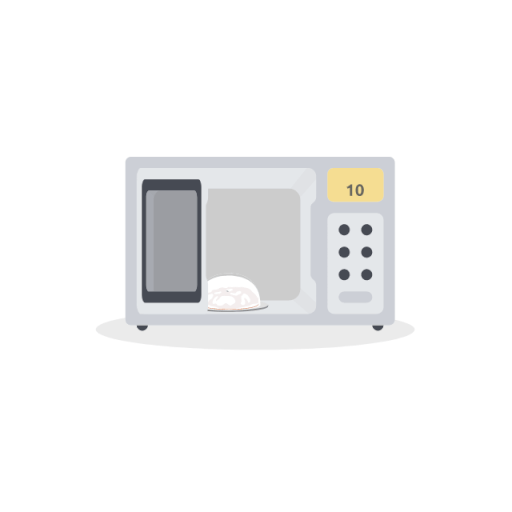

La creación de una Onda Electromagnética (OEM) se basa en la aceleración de cargas eléctricas.
| Mecanismo | Descripción | Ejemplos de OEM Generada |
| Circuitos Oscilantes | Electrones oscilando rápidamente en una antena (Circuitos LC). | Ondas de Radio y Microondas. |
| Transiciones Electrónicas | Electrones en los átomos cambian de un nivel de energía a otro (saltos cuánticos). | Luz Visible, Ultravioleta (UV), Rayos X. |
| Radiación de Cuerpo Negro | Vibración térmica de los átomos y moléculas debido a su temperatura. | Radiación Infrarroja y Térmica. |
| Desintegración Nuclear | Cambios en el núcleo atómico, liberando alta energía. | Rayos Gamma. |
La detección es el proceso inverso a la generación: la OEM transfiere su energía a un detector que contiene cargas eléctricas para generar una señal.
El campo eléctrico de la onda incide sobre la antena, obligando a los electrones libres del metal a oscilar. Esto genera una corriente eléctrica detectable.
Los fotones chocan y arrancan electrones de un material semiconductor o metal, generando así una corriente (usado en cámaras y paneles solares).
La onda es absorbida por un material, aumentando su temperatura. Este cambio de calor se mide y se traduce en una señal.
La generación y detección de OEM es la base de la comunicación moderna:
| Tecnología | Ejemplo de Generación | Ejemplo de Detección |
| Radio y TV | Electrones oscilando en antenas emisoras. | Antenas receptoras que inducen corriente. |
| Telefonía Móvil | Circuitos electrónicos que generan microondas. | El chip y antena interna del teléfono. |
| Rayos X | Electrones acelerados que chocan contra un blanco. | Placas fotográficas o detectores digitales. |